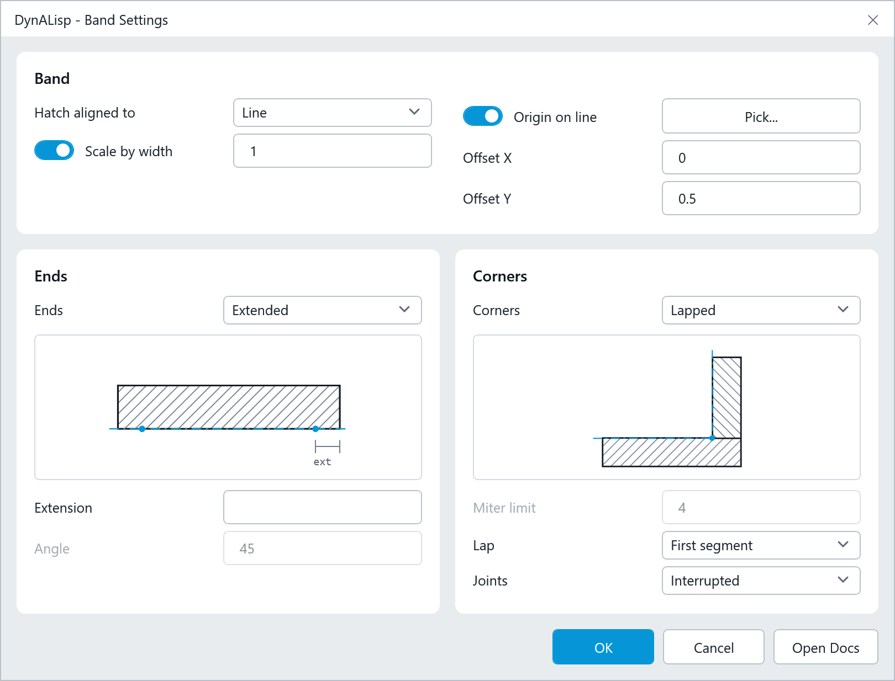

Réglages des bandes (Band Settings)
| Ouverte par | Le bouton ouvrir de Custom band settings, dans la zone Parameters de la fenêtre Quick Draw, et dans la fenêtre Assembly Presets pour une couche d'un assemblage |
| Requis | AutoCAD 2025 ou plus récent pour Windows |
| Licence | Licence publique générale GNU v3 |
Description
Choisissez comment les bandes d'un préréglage de Quick Draw finissent, tournent leurs coins et alignent leur hachure. Un croquis montre chaque choix.
Utilisation
- Dans Dessin rapide, cochez Custom band settings et cliquez le bouton carré à côté.
- Choisissez les réglages, puis OK.
- En dessinant, Ends et Corners les changent pour les bandes suivantes.
Fenêtre Band Settings

- Scale by width – la hachure grandit avec la largeur de la bande.
- Origin on line – où le motif commence sur la ligne ; Pick... le trouve sur un échantillon.
- Hatch aligned to – la ligne, ou le dessin pour un motif qui continue d'un coin à l'autre.
- Ends – Square, Open, Extended, Round ou Angled.
- Corners – Mitered, Beveled, Round ou Lapped.
- Joints – une ligne entre les segments, ou aucune.
Voyez les croquis dans Dessin rapide – Bouts et coins.